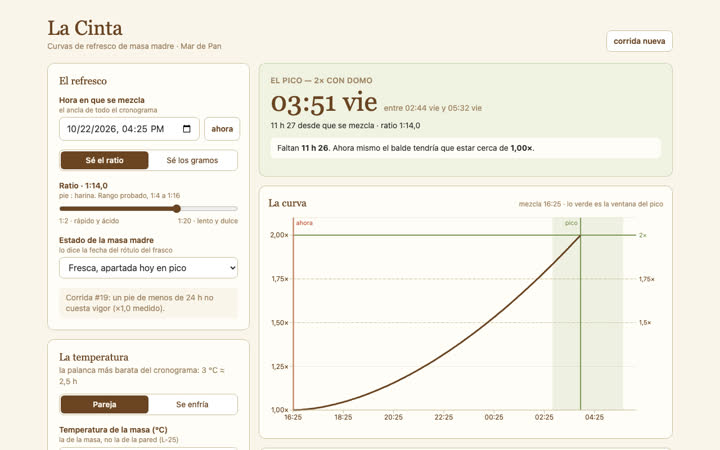
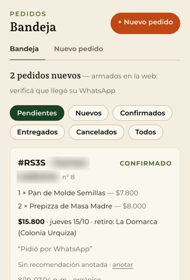
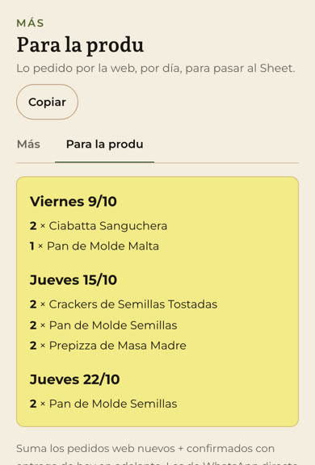
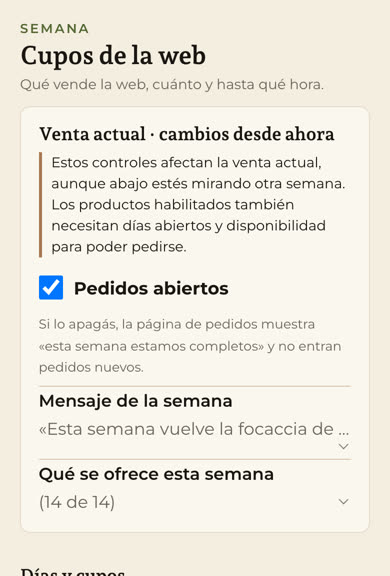
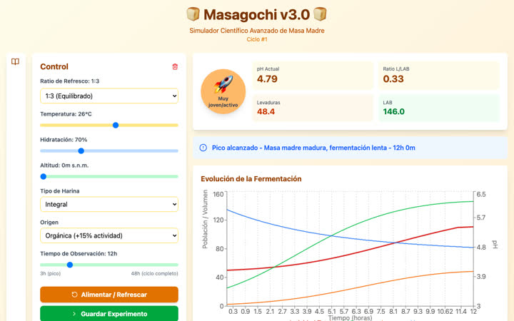
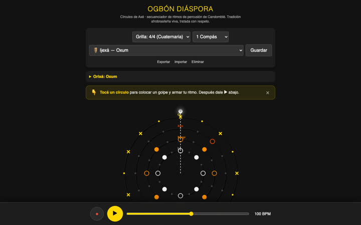
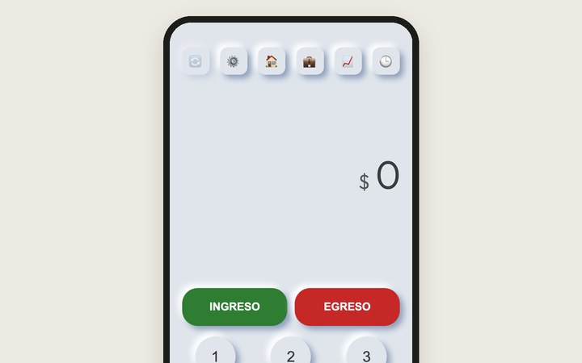
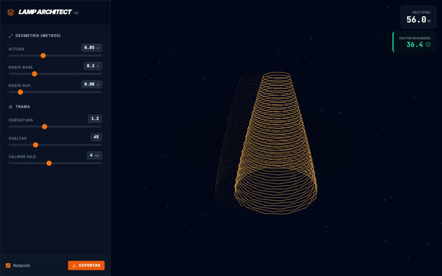

La Cinta
Calcula a qué hora la masa madre llega a cada marca del balde, para que la refresque otra persona
Martín Lleral · La Plata · octubre 2026
Si me conocés por Mar de Pan, esto es lo otro que hago: acompaño a organizaciones a ordenarse para que no dependan de la memoria de una sola persona
Todo lo de esta página lo armé en 2026
Empezó en la panadería. Lo que ordené en Mar de Pan se volvió un método y de ahí pasó a otras organizaciones
Ordenar viene de antes: de chico desarmaba programas para ver cómo andaban y en La Caipo, el centro cultural que teníamos, ya llevaba la caja y el stock en planillas
Lo propio
Comunidad regenerativa La Domarca web · actas · informesla panadería es parte de su red
Panadería, desde 2020 Mar de Pan web · panel · rutas · recetas · pagosla fermentación, hecha herramienta
Herramientas sueltas La Cinta, Masagochi y otras para probar en el navegadorel método nació en Mar de Pan
y de ahí pasó a
Organizaciones que acompaño
Cooperativa de músicos Sindicato Argentino de Boleros web · entradas · cupones · tableros · actas Policonsultorio CMG web · turnos · fichas · historia clínica Gimnasio Tognoli buscador · catálogos · sistema a medida Comunidad de mujeres +45 Sencia web · Mapa · lista de correoPanadería de masa madre · La Plata
Mi oficio ahora es un método que lleva el equipo
Antes los pedidos llegaban por WhatsApp y para saber quién había pagado había que abrir los chats uno por uno. Ahora cada cliente arma el suyo en la web
Lo que armé
Los pedidos se copiaban a mano en una planilla y casi todo pasaba por mí.
Los pagos los controla una herramienta que busca cada comprobante y lo cruza con el banco: ya van 35 repartos. Y lo que sabía lo escribí en una bitácora de cada corrida de masa madre y en notas de planificación, para que lo lleven otras manos: el 30 de septiembre el taller trabajó sin mí.



Cooperativa de músicos · La Plata
El Sindicato vende, mide y controla cada fecha desde su propio sistema
Primero, orden para el grupo: reuniones con estructura y actas desde la grabación. Después, la ticketera creció con lo que pedía cada fecha
Lo que le sumé
Las decisiones se perdían en el grupo de WhatsApp y las reuniones se estiraban. La base de la ticketera la había construido otro desarrollador, de forma voluntaria: la compra, el QR de cada entrada y el panel. Faltaba asegurarla y darle una casa propia.
La aseguré y la pasé a cuentas del Sindicato. Los links se comparten sin dar acceso al panel: el del reporte muestra sólo números y el de la puerta valida las entradas desde cualquier celular. El validador se usó en vivo sin fallas. También armé la preinscripción para sumarse al Sindicato y publiqué el código para otras cooperativas.
Policonsultorio · Gonnet, La Plata
El policonsultorio pasó a un sistema a su medida, sin cortar la atención
El cálculo de lo que cobra cada profesional dependía de una sola persona; ahora lo hace el sistema cada semana
Lo que le sumé
La web ofrecía reservar turno, pero ninguno de los 87 profesionales estaba habilitado y los turnos se pedían por WhatsApp.
Una web con un buscador que entiende aunque escribas mal y turnos con la disponibilidad real. Los datos de salud van cifrados y cada persona ve sólo lo que su tarea necesita. El sistema anterior se apagó en septiembre, después de cambiar de a partes.
Gimnasio de entrenamiento personalizado
939ejercicios que el buscador encontraba
se veíanno aparecían (106)aparecen después del arreglo
El método del gimnasio, con respaldo y otra vez a la vista
El buscador de sus planillas había dejado de encontrar los últimos ejercicios. Fue el primer arreglo: ahora diseñamos juntos un sistema a la medida del gimnasio
El gimnasio planifica los entrenamientos en planillas de Google desde 2017: 113 deportistas activos y un catálogo de más de mil ejercicios. Cada ejercicio nuevo nacía invisible para el buscador.
Destrabé el buscador y ordené el catálogo de cada sistema de entrenamiento, con un respaldo automático.
Un sistema integrado y hecho a la medida del gimnasio: la planificación, cada deportista, el equipo y los números en un mismo lugar. Habla como habla el equipo y deja lo que cada uno necesita a un clic.
Se construye por partes, dentro del acompañamiento y en el orden que elige el gimnasio. Las planillas siguen andando mientras tanto y todo queda a su nombre.
«Es importante que no tenga límite, porque esto es muy creativo»
El dueño, en la primera charla
Planes que arma el dueño
Ocho años de método no se reemplazan. Se les saca el techo.
Comunidad de bienestar para mujeres +45
Por primera vez Sencia tiene una lista de contactos propia
Su web suma el Mapa SENCIA: 16 afirmaciones, escritas por ellas, que le devuelven a cada mujer en qué momento está
Lo que le sumé
Sencia tenía comunidad en Instagram, Facebook y WhatsApp, pero ninguna lista de contactos propia.
Quien quiere el resultado del Mapa deja el correo y entra a una lista que le escribe sola los primeros días. El dominio, el correo, la lista y las cuentas están a nombre de Sencia. La web también tiene páginas para sus encuentros: la primera fue UMBRAL.
Comunidad regenerativa · Colonia Urquiza, La Plata
La comunidad tiene su web, del dosel a las raíces
Soy parte de la comunidad: cinco hectáreas a orillas del Arroyo Rodríguez. Registramos lo que hacemos para que sirva de ejemplo de regeneración y de trabajo comunitario en la región
Lo que aporto
Con ese registro también conocemos fondos y nos presentamos a convocatorias. Lo próximo es una web para recibir aportes.
Si algo de esto le sirve a tu organización, lo charlamos
El primer encuentro es para conocer tu organización y no se cobra
Algunas salieron de la panadería y otras de la curiosidad. Se prueban en el navegador

Calcula a qué hora la masa madre llega a cada marca del balde, para que la refresque otra persona

Un simulador para entender cómo fermenta la masa madre

Ritmos de percusión afrobrasileña dibujados como círculos que suenan

Una app para anotar los gastos de la casa en dos toques. La demo tiene datos inventados

Diseña lámparas de hilo en 3D y calcula cuántos metros de hilo llevan
Y una sin pantalla: Desgrabar pasa una reunión a texto, con quién dijo qué, sin que el audio salga de la compu. De ahí salen las actas